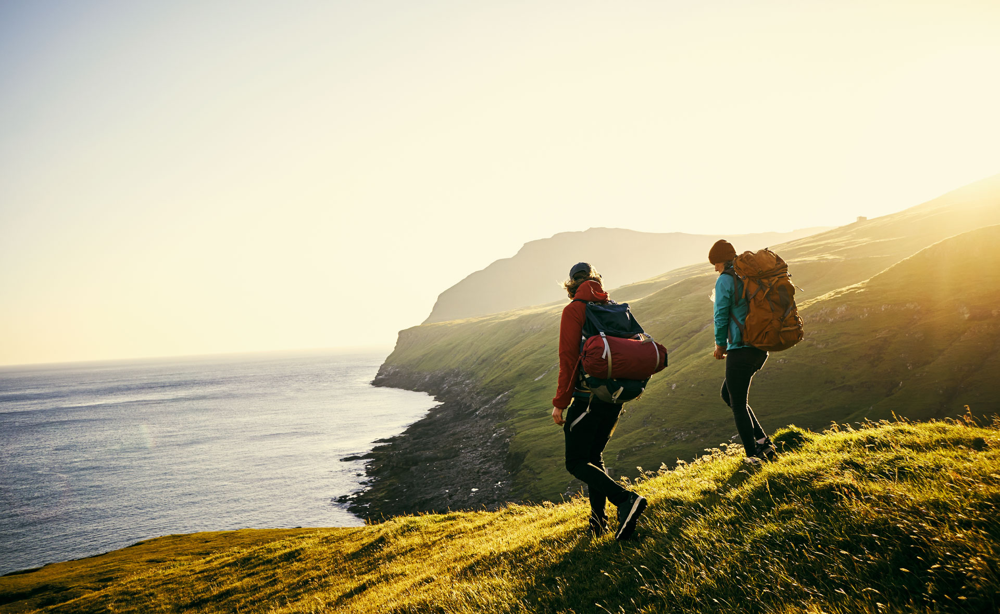

Pagina de turismo

Los turistas pueden disfrutar de experiencias gastronómicas únicas, como cenas bajo las estrellas en lugares emblemáticos, y explorar museos, monumentos y rutas naturales. La oferta incluye hoteles, restaurantes y actividades adaptadas a distintos intereses y edades, garantizando una visita completa y enriquecedora. Para más información y planificación de viajes, se recomienda consultar los portales oficiales de turismo de España, Aragón y Zaragoza, donde se puede acceder a itinerarios, mapas, eventos y servicios de asistencia
lista de turismo